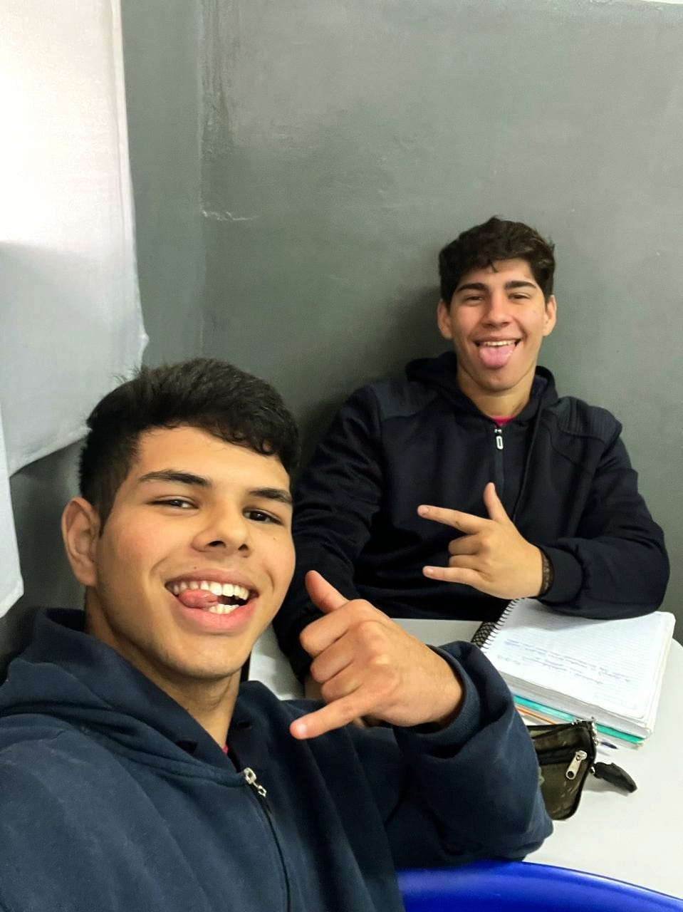
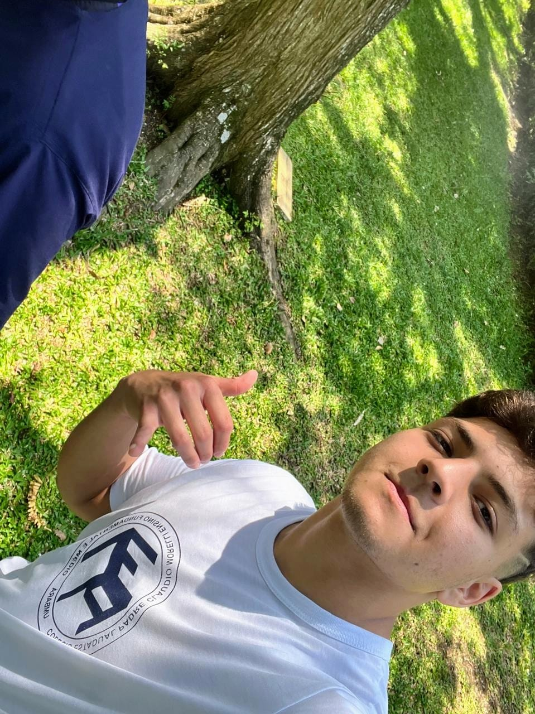

Ensino Fundamental
Data: 2013-2021
O ensino fundamental foi uma fase cheia de descobertas e aprendizado. Aqui estão algumas das lembranças mais marcantes.


Ensino Médio
Data: 2022-2024
No ensino médio, as responsabilidades aumentaram, mas as amizades e os momentos especiais também.
 